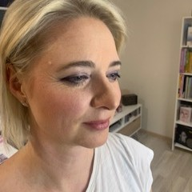
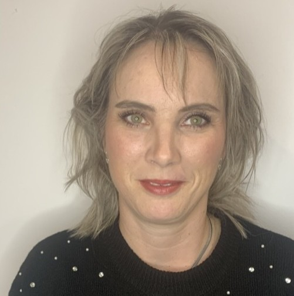

Moje mamka (77) trochu zapomněla, jak ze sebe udělat kočku. S dcerou jsme jí k svátku vymýšlely dárek ve smyslu kosmetika a podobně. Při hledání na sociálních sítích, dcera objevila nabídku "proměny pro 3 generace". Naprosto nás to zaujalo. Mamka se na líčení a focení moc netvářila, ale jely jsme. Během pár minut z ní všechna nervozita opadla, protože všechny tři dámy - kosmetička, vizážistka i fotografka, byly milé a přátelské. Celé líčení, oblékání i focení probíhalo ve velmi uvolněné atmosféře. Mamku jsem dávno neviděla v takové pohodě. Byla nadšená ze své velké proměny a z bezva času stráveného společně. Sledovat, jak si to užívá, bylo super. Všechny tři jsme se moc dobře bavily a získaly pár nových triků jak zaujmout. Tří-generační proměnu bych doporučila všem, které spolu chtějí prožít nové zážitky. Kolikrát se vnučka s babičkou sejdou u líčení? 😉
Káťa

Na kurz péče o pleť jsem přišla, protože jsem se neuměla starat o svoji pleť. Potřebovala jsem poradit. Byla jsem zvědavá co mi Haňďa ukáže. Bylo to moc fajn, konečně mi někdo řekl co mám a nemám používat, jak to mám používat a kdy to mám používat. Byly mi představeny všechny vhodné výrobky pro mne. Zároveň ale bylo jen na mne jestli řeknu tohle chci, nebo ne nechci, děkuji. Nikdo mi nic nenutil. Mne to ale nadchlo a chtěla jsem vše. Už více jak rok používám to, co mi poradila. Pleť se mi o 100% zlepšila a jako bonus jsem se naučila rychle líčit na běžný den, ale zvládnu i líčení na ples. Jsem moc spokojená a budu v tom ráda pokračovat.
Máca

Moc děkuji Handě za luxusní večerní líčení na ples. Doma i u kamarádek mělo velký úspěch :) Atmosféra byla příjemná, kamarádská, a moc jsem si to užila. Na líčení jsem byla dopoledne a vydrželo až do rána :) Určitě znovu využiji a všem doporučuji ❤️
Žaneta

Objednala jsem se na líčení na ples a byla jsem nadmíru spokojená! Líčení bylo krásné, vydrželo celý večer a sklidilo spoustu pochval od přátel✨ Hanku rozhodně doporučuji – profesionální přístup a skvělý výsledek👌 Ještě jednou děkuji❤️
Adéla

Na kurz líčení a péče o pleť jsem šla, protože jsem se v ten moment setkání ve svém životě někam posunula a chtěla zkusit něco nového a upřímně jsem se nikdy o sebe neuměla starat a chtěla se hezky nalíčit a vypadat. Bylo to úžasné, neměla jsem pocit, že jsem do něčeho nucená, jen si to prostě zkus a sama uvidíš. Takhle to na mě působilo. Šlo to od úplného začátku až po nalíčení, nevěděla jsem, že tolik věcí dělám takových let špatně. Teď střídám masky na obličej, zkouším novinky a už mi to i jde a netrvá mi to tak dlouho. Je pravda, že ze začátku jsem s tím bojovala a šlo to pomalu a zkoušela jsem postupně, měla jakýsi manuál 😁, ale každým dalším dnem se to zlepšovalo a teď mě to i baví a těším se na péči o sebe. Moje očekávání kurz dokonce předčil. Nebylo to hned, ale lidé si začali všímat, kolegyně a rodina, že mam nový make-up a později, že mám hezkou pleť a skoro bez vrásek. Cítím se prostě líp a je to skvělý pocit.
Martina